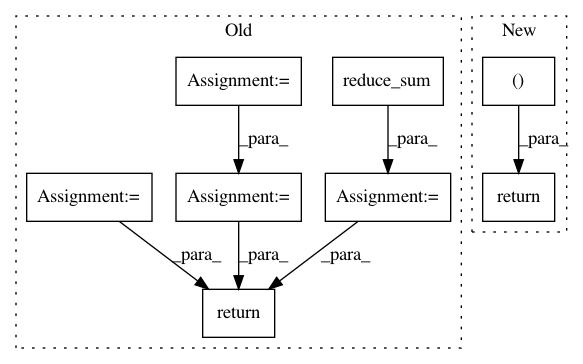

ecbe066e40882b166401b70ae9c4f1d535c93b12,texar/losses/adv_losses.py,,binary_adversarial_losses,#Any#Any#Any#Any#,12
Before Change
real_loss = tf.nn.sigmoid_cross_entropy_with_logits(
logits=real_logits, labels=tf.ones_like(real_logits))
num_real_data = tf.shape(real_loss)[0]
ave_real_loss = tf.reduce_sum(real_loss) / tf.to_float(num_real_data)
fake_logits = discriminator_fn(fake_data)
fake_loss = tf.nn.sigmoid_cross_entropy_with_logits(
logits=fake_logits, labels=tf.zeros_like(fake_logits))
num_fake_data = tf.shape(fake_loss)[0]
ave_fake_loss = tf.reduce_sum(fake_loss) / tf.to_float(num_fake_data)
disc_loss = ave_real_loss + ave_fake_loss
if mode == "min_fake":
gen_loss = - ave_fake_loss
elif mode == "max_real":
fake_loss_ = tf.nn.sigmoid_cross_entropy_with_logits(
logits=fake_logits, labels=tf.ones_like(fake_logits))
gen_loss = tf.reduce_sum(fake_loss_) / tf.to_float(num_fake_data)
else:
raise ValueError("Unknown mode: %s. Only "min_fake" and "max_real" "
"are allowed.")
return gen_loss, disc_loss
After Change
else:
raise ValueError("Unknown mode: %s. Only "min_fake" and "max_real" "
"are allowed.")
return g_loss, d_loss
In pattern: SUPERPATTERN
Frequency: 3
Non-data size: 8
Instances
Project Name: asyml/texar
Commit Name: ecbe066e40882b166401b70ae9c4f1d535c93b12
Time: 2017-12-21
Author: zichaoy@cs.cmu.edu
File Name: texar/losses/adv_losses.py
Class Name:
Method Name: binary_adversarial_losses
Project Name: GPflow/GPflow
Commit Name: d1ac7b831ad36cd0e4bdd7980819f83208345148
Time: 2018-02-07
Author: alex.ialongo@gmail.com
File Name: gpflow/expectations.py
Class Name:
Method Name: _expectation
Project Name: GPflow/GPflow
Commit Name: bd1e9c04b48dd5ccca9619d5eaa2595a358bdb08
Time: 2020-01-31
Author: st--@users.noreply.github.com
File Name: gpflow/kernels/misc.py
Class Name: Coregion
Method Name: K_diag